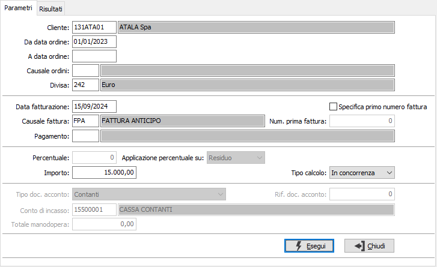
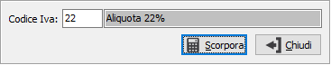
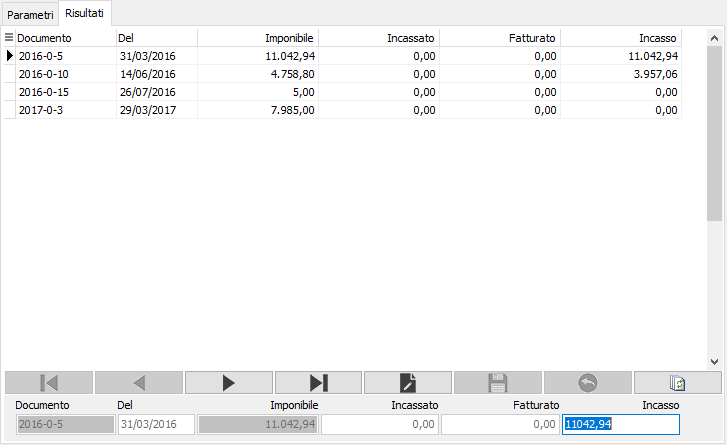

Generazione fatture di anticipo
Il programma effettua la generazione delle fatture di anticipo collegate agli ordini clienti in base ai parametri inseriti dall’utente.
La sezione Parametri consente l'inserimento dei parametri di selezione ed elaborazione:

Le date, la causale e la divisa inseriti nei parametri servono per filtrare gli ordini del cliente impostato, che non può essere lasciato vuoto. Saranno selezionati tutti gli ordini inevasi per cui non è stato indicato un acconto in fase di inserimento ordine.
Nella causale fattura deve essere indicata la causale con cui generare la fattura di anticipo, sul campo è presente la vista sulle causali di fatturazione abilitate alla gestione degli anticipi, come visto nel paragrafo “Causali fatturazione”. Possono essere indicate causali di fatturazione a scorporo, in tal caso saranno selezionati solo ordini inseriti con tale modalità. Il campo non può esser lasciato vuoto.
Nel campo “Pagamento” può essere indicata la modalità di pagamento con cui generare la fattura di anticipo, altrimenti viene assunta quella indicata in anagrafica cliente. Nel caso in cui la modalità di pagamento indicata corrisponda ad un pagamento in contanti sarà possibile accedere anche ai campi “Tipo doc. acconto”, “Rif. doc. acconto” e “Conto di incasso”, quest’ultimo è attivo solo se è abilitata la variazione del conto incassi nelle “Opzioni” (dell’applicazione, della ditta, del gruppo utenti o dell’utente) in XConfig, il conto viene automaticamente proposto in base a quanto indicato nei codici fissi di OS1Config e in base al “Tipo doc. acconto” selezionato.
La spunta sul campo “Specifica primo numero fattura” attiva il campo “Num. Prima fattura”, dove indicare il numero della fattura di anticipo che si andrà a generare.
Nel campo “Percentuale” può essere indicata la percentuale dell’importo del valore dell'ordine con cui generare la fattura, l’importo calcolato è mostrato nel campo "Incasso" per ogni ordine presente nella selezione. Se viene indicata la percentuale non è possibile accedere all’importo e al Tipo calcolo; è possibile indicare, tramite il campo "Applicazione percentuale", su quale valore deve essere applicata la percentuale:
Residuo (default): il valore totale dell'ordine decurtato degli anticipi fatturati
Totale: il valore totale dell'ordine.
Nell’importo può essere indicato l’imponibile dell’anticipo che verrà assegnato agli ordini elaborati; l'importo viene assegnato in base a quanto stabilito dal 'Tipo calcolo' che può essere impostato a:
in proporzione: l'importo viene assegnato a tutti gli ordini selezionati in modo proporzionale al totale dell'ordine
in concorrenza: vengono decrementati gli ordini selezionati partendo dal primo ordine

Inoltre se la causale di fatturazione non è a scorporo è disponibile sul campo "Importo" la funzione di scorporo dell'Iva, tramite i tasti CTRL+I, dopo aver inserito l'importo, viene richiesto il codice Iva da utilizzare ed è possibile scorporare l'Iva dall'importo inserito. In particolare si attiva la finestra mostrata a lato. Dopo aver indicato l’aliquota Iva cliccando sul campo scorpora sarà calcolato l’importo scorporato da utilizzare.
Eseguendo l’elaborazione nella pagina “Risultati” vengono visualizzati gli ordini selezionati e l’importo assegnato per ogni ordine; tali importi sono modificabili, modificando quindi l’assegnazione proposta.
Nel caso in cui si sia selezionato ordini a scorporo il calcolo dell'assegnazione dell'importo incassato sarà effettuato sul valore relativo alla somma di Imponibili ed Iva dell'ordine, mentre se si sono selezionati documenti non a scorporo tale calcolo viene effettuato sul solo imponibile.

Nel caso in cui nella maschera dei parametri non sia stato indicato l’importo dell’anticipo sarà necessario indicarlo nel campo incasso dei risultati; inoltre se selezionati documenti a scorporo la colonna Imponibile assumerà l’etichetta Imponibile + Iva.
Nella colonna Incassato sono riportati gli importi derivanti da fatture di anticipo già emesse, nella colonna Fatturato è riportato quanto della fattura di anticipo è stato stornato in fattura definitiva.
Confermando la generazione viene richiesta la stampa del documento e successivamente la contabilizzazione della fattura.